Simple Linear Regression for Numerical Outcomes
Opening scenario
A financial analyst at Riverbend Health System is preparing the budget assumptions for next year’s inpatient units. The chief financial officer asks a specific question: when an inpatient stay lasts one day longer, how much higher are its charges, on average? Everyone at the meeting expects longer stays to carry higher charges, but a budget needs a figure in dollars, and the expectation alone does not supply one.
Table 1 lists five stays from the hospital’s discharge file. The first four rise in an orderly way, by roughly $2,000 for each added day. The fifth, a 5.7-day cardiology stay that included time in the intensive care unit (ICU), carries charges of almost $125,000, several times what its length alone would suggest.
| Stay | Service line | Length of stay (days) | Total charges |
|---|---|---|---|
| IPD006443 | Obstetrics | 2.0 | $10,398.00 |
| IPD005873 | Medicine | 4.6 | $15,967.01 |
| IPD001939 | Surgery | 7.0 | $21,206.39 |
| IPD007584 | Medicine | 12.0 | $30,974.13 |
| IPD005645 | Cardiology (with ICU care) | 5.7 | $124,953.57 |
Chapter 10 measured how closely two numerical measures move together
with the correlation coefficient, written
r and also called Pearson’s r, a number from −1 to 1. This
chapter fits the straight line that summarizes that movement, reads its
slope as dollars per day, and checks how well the line describes stays
like the fifth one. The walkthrough answers the analyst’s question.
Whether shortening stays would reduce charges by the same amount is a
different question; the Real World box at the end of the chapter returns
to it, and Chapter 13 develops the tools to approach it.
By the end of this chapter, you will be able to:
- Describe the direction, form, strength, and unusual points of a relationship from a scatterplot before fitting a line.
- Fit a least-squares line in Excel with a chart trendline and with
the
SLOPE,INTERCEPT, andRSQfunctions, and write its equation in the units of the data. - Interpret the slope and the intercept in plain language, including when the intercept has no practical meaning.
- Calculate predicted values and residuals, and use a residual plot to judge whether a straight line describes the data adequately.
- Interpret R-squared as the share of variation the line accounts for, and relate it to the correlation coefficient from Chapter 10.
- Recognize the limits of a regression line: extrapolation, influential points, and the difference between association and cause.
Key concepts
A regression line turns “these two measures rise together” into a statement with units: how much one measure changes, on average, for each one-unit difference in another. This section develops simple linear regression in five steps:
- look, reading the scatterplot before fitting anything,
- fit, finding the least-squares line and its intercept and slope,
- read, stating the slope and the intercept in the units of the data and using the line to predict,
- check, judging the fit with residuals, a residual plot, and R-squared,
- limits, recognizing extrapolation, influential points, and the difference between association and cause.
The examples use four files. The DS prefix numbers the
book’s operational teaching datasets from the fictional Riverbend Health
System, and the PH prefix numbers its public health
datasets. This chapter uses DS4 (inpatient stays),
PH1 (county public health measures), DS7 (a
population health registry), and DS9 (a small wellness
screening file).
About the teaching data. Every dataset in this book is synthetic, as Chapter 5 explained, so none contains protected health information. Four points matter for this chapter:
DS4records charges, not costs. A hospital’s charges are the amounts it bills, and they generally differ from the resources the care consumes. Researchers who need cost estimates convert charges with hospital cost-to-charge ratios, such as those the Healthcare Cost and Utilization Project publishes (Agency for Healthcare Research and Quality [AHRQ], 2026). This chapter therefore speaks of charges throughout.PH1is not a release from the Centers for Disease Control and Prevention (CDC). It pairs real county names with synthetic estimates modeled on the CDC’s Population Level Analysis and Community Estimates (PLACES) program (Centers for Disease Control and Prevention [CDC], 2025). Its values describe no actual county.DS7is a synthetic registry of 10,000 adult patients as of December 31, 2025, with one row per patient.- Some synthetic values sit at fixed limits. The data generators cap certain measures, so rows of points line up at those limits in the scatterplots: 108 registry patients have a systolic blood pressure of exactly 88 millimeters of mercury, and 11 and 9 counties have diagnosed diabetes rates of exactly 4 and 24 percent. These limits are features of the teaching data, not clinical findings.
Look before you fit: the scatterplot
The response variable is the measure a regression line describes or predicts; it goes on the vertical axis and is written y. The explanatory variable is the measure used to describe or predict it; it goes on the horizontal axis and is written x. The response variable is also called the dependent variable, because its values are modeled as depending on the other measure. The explanatory variable is also called the independent variable.
Different fields use different names for the same two roles, so Figure 1 lists the pairs you are likely to meet, alongside one stay read from a scatterplot. This book uses response and explanatory variable, which describe the roles without implying that one measure causes the other. The name “dependent” describes how the model is set up, not a proven cause.
![Figure 1: The anatomy of a scatterplot. Each point is one stay: stay IPD003667, highlighted, sits at x = 8 days of stay and y = $43,670 in total charges. The table names the two roles: the response variable (also called the dependent variable or outcome) on the vertical axis, written y, and the explanatory variable (also called the independent variable or predictor) on the horizontal axis, written x. Statistics texts and the documentation for Excel’s Analysis ToolPak use “dependent” and “independent” (Microsoft, n.d.-f); this book uses “response” and “explanatory.” Source: datasets/DS4_inpatient_clean.csv, a selection of stays.](figures/generated/ch_12_scatterplot_anatomy.png)
The question decides which measure plays which role. The analyst asks how charges change with length of stay, so total charges are the response and length of stay is the explanatory variable. Reversing the roles would answer a different question, how length of stay changes with charges, and would produce a different line.
Looking comes first because a fitted line and its summary numbers describe only the straight-line part of a relationship. In a well-known demonstration, the statistician Francis Anscombe constructed four small datasets that produce the same fitted line and the same R-squared, the measure of fit this chapter defines below (Anscombe, 1973). Figure 2 plots them. Only the first is described adequately by a straight line. The second is a curve, the third is a tight line with one stray point, and in the fourth a single point sets the slope.
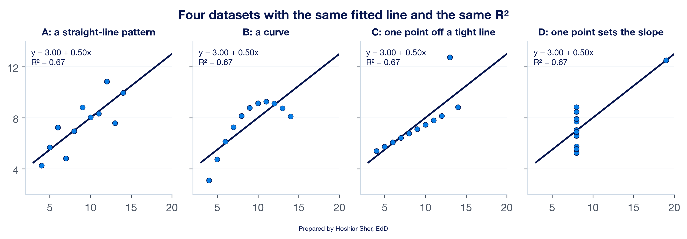
Chapter 11 introduced the scatterplot as the chart for a relationship between two numerical measures. Before you fit a line, read four features of the plot (Diez et al., 2019), shown in Figure 3:
- Direction. Do the points rise from left to right (positive) or fall (negative)?
- Form. Do they follow a roughly straight path, or do they bend?
- Strength. Do they cluster tightly around a path, or scatter loosely?
- Unusual points. Do any points sit far from the rest?
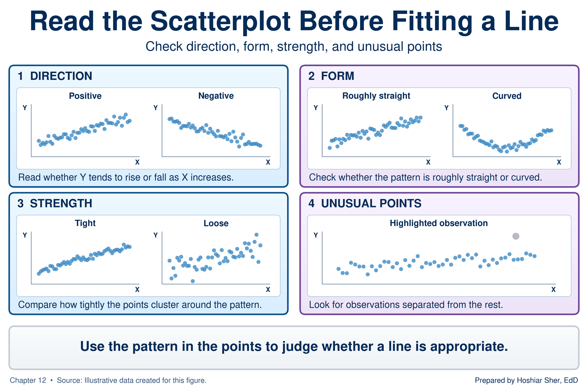
When the form bends. A bend means the relationship changes speed partway along. On a straight line, each one-unit step in the explanatory variable adds the same amount to the response. On a bend, the amount per step changes: early steps may add a large amount and later steps very little, or the reverse.
As an illustration, not drawn from the teaching data, the first small
dose of a pain medication may lower a pain score sharply, while each
further increase lowers it less, until the points level off. A straight
line can describe only one constant amount per step, so for a bend it
overpredicts in one region and underpredicts in another, and
r understates how closely the measures are related. The
residual plot section returns to how to detect a bend and what to do
about it.
To practice reading these features, use
datasets/DS9_wellness_screening.csv, a file of 100 adults
seen at an annual wellness screening. Its columns, which include age,
body mass index (BMI), steps per day, resting heart rate, blood
pressure, stress, sleep, and fatigue, were designed so that different
pairs show different kinds of relationship. Figure 4 plots nine pairs,
from a strong positive relationship to no relationship at all. Two
panels carry the lesson of this section: exercise and resting heart rate
have a strong r of −0.72 but follow a curve that levels
off, and sleep and fatigue have an r near 0 yet a clear U
shape.
The file is built for practice: its 100 rows were generated so that
particular pairs of columns show strong, moderate, weak, and absent
relationships, curved patterns, and one outlier and one high-leverage
point. The first 14 columns supply the examples in this chapter’s
figures; the last six, height_cm to vitamin_d
(columns O to T), supply new pairs for
Practice C and the exercises and appear in no figure. Real data seldom
show such clear patterns.
![Figure 4: Nine pairs of columns in the wellness screening file, each labeled with its kind of relationship and its correlation r: strong positive (BMI and waist, 0.93), strong negative (steps and sedentary hours, −0.83), curved negative (exercise and resting heart rate, −0.72), moderate positive (age and systolic blood pressure, 0.50), moderate negative (BMI and steps, −0.47), U shape (sleep and fatigue, −0.04), weak positive (stress and fasting glucose, 0.23), weak negative (steps and resting heart rate, −0.21), and no relationship (birth month and systolic blood pressure, 0.05). Axis labels give units where the measure has one. Birth months are spread slightly sideways so the points do not overlap. Source: datasets/DS9_wellness_screening.csv, 100 synthetic adults.](figures/generated/ch_12_wellness_pairs.png)
Draw the scatterplot before you fit or report a line. Two datasets can share the same equation and the same R-squared while having entirely different shapes, and only the plot shows the difference.
The line: intercept and slope
Simple linear regression describes a numerical response variable with a straight line in one explanatory variable. The line is set by two numbers. The intercept is the predicted value of the response when the explanatory variable equals zero. The slope is the change in the predicted response for each one-unit increase in the explanatory variable.
In words, the line reads:
predicted response = intercept + slope × explanatory variable
Statistics texts write the same line with symbols, as y-hat = b0 + b1 × x. Here y-hat (written as a y with a small hat over it) stands for the predicted value of the response, b0 (“b-zero”) is the intercept, and b1 (“b-one”) is the slope. This chapter uses the words and gives the symbols only for reference.
For the 8,500 Riverbend stays, the line that the walkthrough fits is:
predicted charges = $6,344.31 + $2,131.62 × length of stay in days
Figure 5 draws this line. The intercept is where the line meets the vertical axis, at zero days. The slope is the rise of the line for a run of one day: moving from 6 to 7 days, predicted charges rise by $2,131.62. Because the line is straight, the rise is the same for every added day, whether the stay grows from 1 to 2 days or from 9 to 10.
![Figure 5: The anatomy of the line fitted to 8,500 inpatient stays: predicted charges = $6,344.31 + $2,131.62 × days. The intercept, $6,344.31, is the predicted charge at zero days, outside the observed lengths of stay, which start at 0.6 days (shaded); the slope, $2,131.62, is the rise for each additional day. For stay IPD003667, at 8 days, the predicted value is $23,397 and the actual charge $43,670, a residual of +$20,273. A selection of other stays is shown. Source: line fitted to datasets/DS4_inpatient_clean.csv, stays admitted January 2024 to December 2025.](figures/generated/ch_12_slope_intercept.png)
Table 2 collects the terms this chapter uses, with their symbols, their meaning in the charges example, and the Excel function that calculates each one.
| Term | Symbol | In the charges example | In Excel |
|---|---|---|---|
| Response variable | y | Total charges, in dollars | First argument of SLOPE; second column selected for a
scatterplot |
| Explanatory variable | x | Length of stay, in days | Second argument of SLOPE; first column selected for a
scatterplot |
| Intercept | b0 | $6,344.31, the predicted charge at 0 days | INTERCEPT |
| Slope | b1 | $2,131.62 more per additional day | SLOPE |
| Predicted value | y-hat | The line’s charge for a given length of stay | FORECAST.LINEAR |
| Residual | y − y-hat | Actual charges minus predicted charges | A subtraction formula |
| Correlation coefficient | r | 0.467: a moderate positive straight-line relationship | CORREL |
| R-squared (coefficient of determination) | R² | 0.218: the line accounts for 21.8 percent of the variation in charges | RSQ |
Residuals and least squares
Many lines could be drawn through the cloud of stays. Regression chooses one by measuring how far each stay sits from the line.
A residual is the difference between an observed value of the response and the value the line predicts for it: residual = actual − predicted. The least-squares line is the line that makes the sum of the squared residuals as small as possible.
A stay above the line has a positive residual, because it was charged more than the line predicts. A stay below the line has a negative residual. Figure 6 marks three stays of exactly 8 days from the inpatient file. The line predicts $23,397 for any 8-day stay, so each stay’s residual is its charge minus $23,397:
- IPD003667 was charged $43,670, a residual of +$20,273.
- IPD000649 was charged $24,252, a residual of +$855; the line describes this stay closely.
- IPD003944 was charged $10,296, a residual of −$13,102.
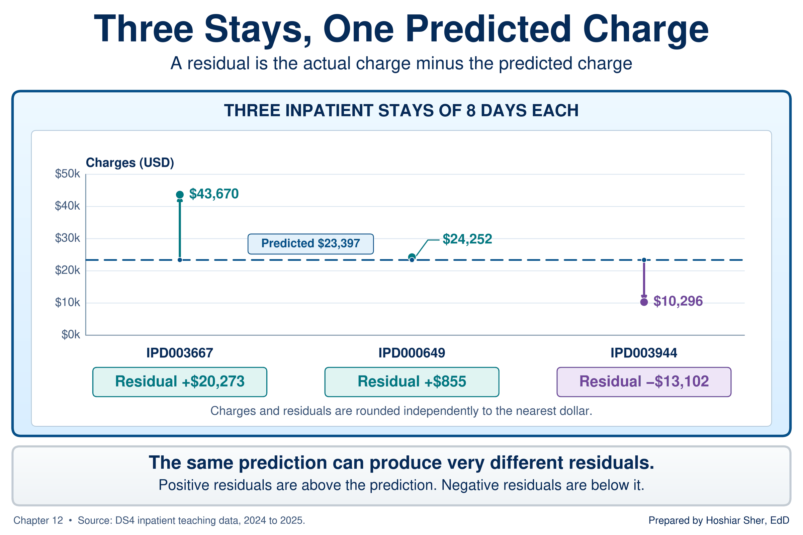
The residuals are squared before they are added for two reasons. Without squaring, positive and negative residuals would cancel, and many poorly fitting lines would score as well as a close-fitting one. Squaring also gives large misses more than proportional weight, which is why a few very large charges can pull the line toward them, a point this section returns to under influential points (Diez et al., 2019; National Institute of Standards and Technology [NIST], 2012). One consequence of the least-squares method is that the residuals of the fitted line always average zero; the walkthrough uses that property as a check.
Figure 7 shows the rule at work on four illustrative points. A candidate line misses the points by −1, −2, −1, and +2, so its squared residuals add to 10. The least-squares line misses by +1, −1, −1, and +1, a sum of 4, and no other straight line produces a smaller sum.
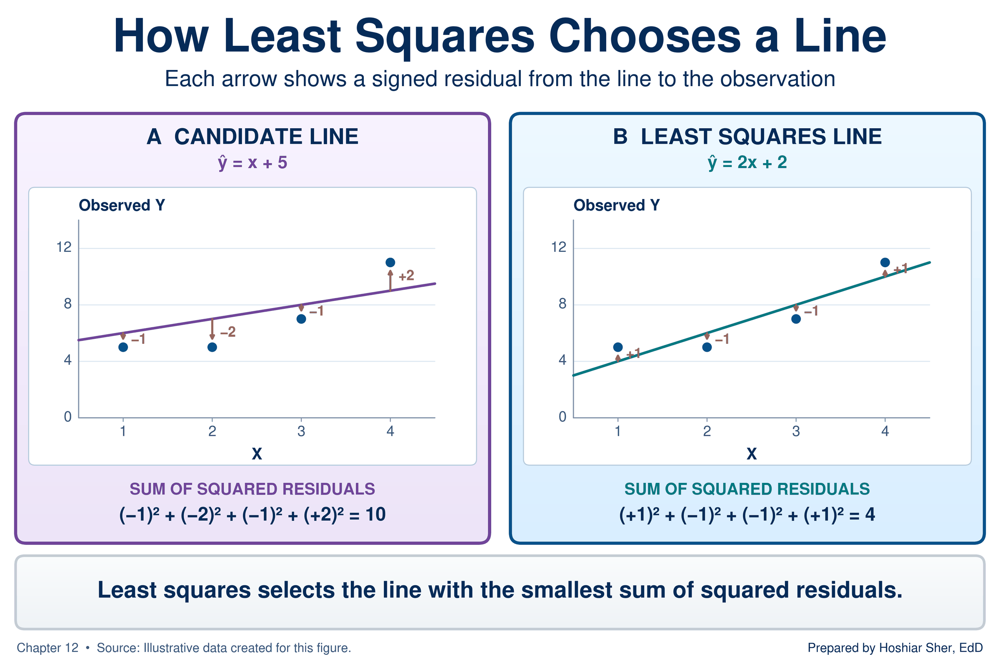
Excel’s SLOPE (Microsoft, n.d.-e),
INTERCEPT (Microsoft, n.d.-c), and RSQ
(Microsoft, n.d.-d) functions, the chart trendline, and the Analysis
ToolPak’s Regression tool (Microsoft, n.d.-f) all calculate the same
least-squares line.
With the inpatient file converted to a Table named
Inpatient:
=SLOPE(Inpatient[total_charges_usd], Inpatient[length_of_stay_days])
returns about 2131.62.
=INTERCEPT(Inpatient[total_charges_usd], Inpatient[length_of_stay_days])
returns about 6344.31.
=RSQ(Inpatient[total_charges_usd], Inpatient[length_of_stay_days])
returns about 0.218. Each function takes the response
column first and the explanatory column second.
Excel’s regression functions list the response before the explanatory
variable, which is the reverse of the x-then-y order in which the line
is usually described. If you swap the two ranges, SLOPE
returns about 0.0001, the slope of days on charges, without
any error message. When a slope looks implausibly small or large, check
the order of the arguments first.
Figure 8 sets the two orders side by side: the scatterplot takes length of stay first, as X, while the functions take charges first, as Y. The roles of the two columns are the same in both; only the order in which Excel asks for them differs.
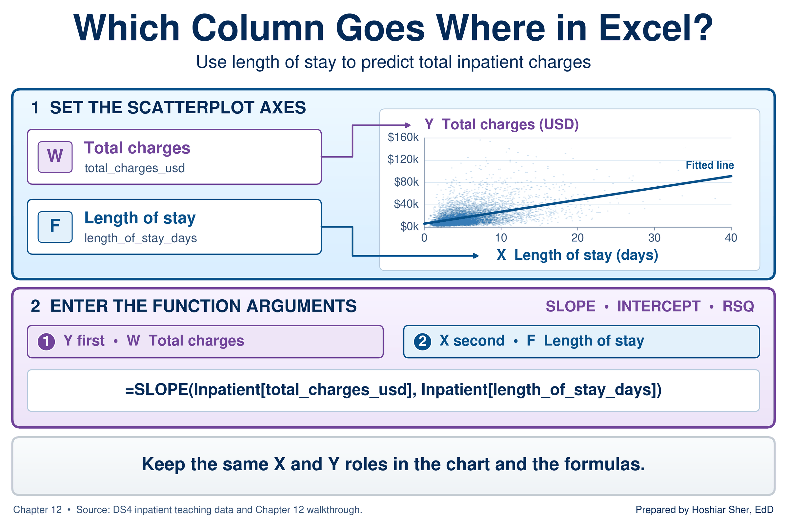
Calculate two residuals by hand from the line predicted charges = $6,344.31 + $2,131.62 × days, using stays from Table 1.
- For IPD007584, a 12-day stay charged $30,974.13, calculate the predicted charge and the residual.
- For IPD005645, a 5.7-day stay charged $124,953.57, do the same.
- State in one sentence which stay the line describes well, and name one feature of the second stay, visible in the table, that the line does not take into account.
The answer key is at the end of the chapter.
Reading the slope and the intercept
A slope is read as a sentence with units: for each additional unit of the explanatory variable, the predicted response is higher (or lower) by the slope, in the response’s units. For the charges line:
- For each additional day of stay, predicted charges are $2,131.62 higher.
- The units are dollars per day, the response’s units divided by the explanatory variable’s units.
- A negative slope would mean the predicted response falls as the explanatory variable rises.
A slope depends on the units of both measures. If length of stay were
recorded in hours instead of days, the slope would be $2,131.62 ÷ 24,
about $88.82 per hour, but the line, its predictions, r,
and R-squared would not change. Always state the units with the
slope.
The slope describes how charges differ, on average, between stays of different lengths. It is an average across all 8,500 stays, not a statement about any one patient: the three 8-day stays in Figure 6 share one predicted charge but differ by more than $33,000.
The intercept, $6,344.31, is the predicted charge for a stay of zero days. No stay lasts zero days, and the shortest stay in the file lasts 0.6 days, so the intercept anchors the line rather than describing any stay in the data. Read an intercept as a meaningful value only when zero is a sensible value of the explanatory variable and lies within the range of the data (Bewick et al., 2003). Practice B shows an intercept that fails both tests.
Prediction and extrapolation
A predicted value is the value of the response that the line gives for a chosen value of the explanatory variable. Extrapolation is using the line to predict for values of the explanatory variable outside the range of the data used to fit it.
To predict charges for a 3-day stay, substitute 3 into the line:
$6,344.31 + $2,131.62 × 3 = $12,739.17. Excel’s
FORECAST.LINEAR function does the same calculation from the
data, without your typing the slope and intercept (Microsoft, n.d.-b).
It takes the new x value first, then the response column, then the
explanatory column.
=FORECAST.LINEAR(3, Inpatient[total_charges_usd], Inpatient[length_of_stay_days])
returns about 12739.18, the predicted charge for a 3-day
stay. The one-cent difference from the hand calculation comes from
rounding the slope and intercept to two decimals.
A prediction is only as reliable as the data behind it. The Riverbend stays run from 0.6 to 37.9 days, and the line has been checked against stays only within that range. Beyond it, nothing in the data shows whether charges keep rising in a straight line, level off, or rise faster. Figure 9 extends the line to 60 days, where it predicts $134,241.73 for a stay longer than any in the file. The arithmetic is correct, but the data give no support for it (Bewick et al., 2003; Diez et al., 2019).
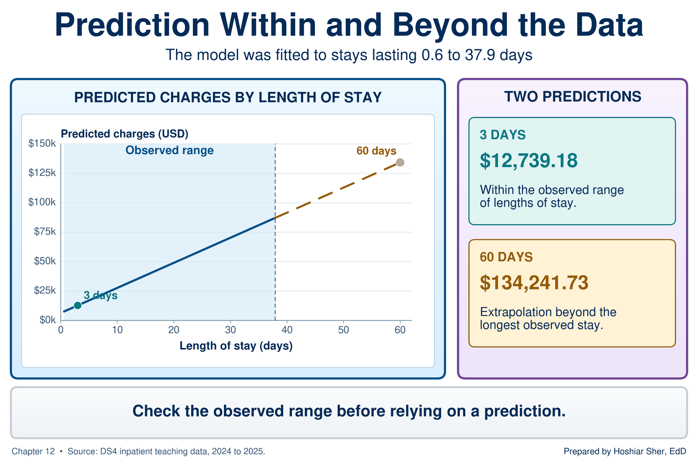
When you report a regression line, state the range of the explanatory variable it was fitted on, and predict only within that range.
Checking the fit: residual plots
A line can be the best straight line for the data and still describe the data poorly. The residuals show where the line departs from the data.
A residual plot is a scatterplot of the residuals against the predicted values, with a horizontal reference line at zero. Non-constant spread is a pattern in which the residuals scatter farther from zero in one part of the plot than in another.
A residual plot moves each point to new coordinates. Figure 10 follows stay IPD003667 from the scatterplot to the residual plot: its horizontal position becomes its predicted charge, $23,397, and its vertical position becomes its residual, $43,670 − $23,397 = +$20,273. The line itself becomes the horizontal reference line at zero.
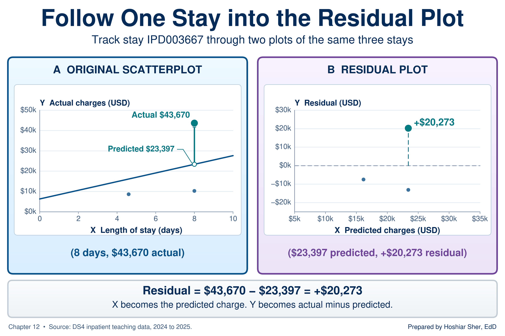
If a straight line describes the data adequately, the residuals form a band of roughly even width around zero, with no pattern. Any visible structure means the line is missing something (NIST, 2012; Vu & Harrington, 2020). Figure 11 shows the four patterns to recognize:
- A random band of even width: the straight line is adequate.
- A curve: the relationship bends, as described under Look before you fit. The line runs above the points in one region and below them in another, and its single slope describes no part of the data well. Describe the relationship separately within ranges where it is roughly straight, consider a transformation such as the logarithm in the Going Deeper box, or note that a curved model is needed.
- A fan that widens to one side: non-constant spread, so the line’s predictions are less precise in that region.
- One distant point: a case to investigate before trusting the line.
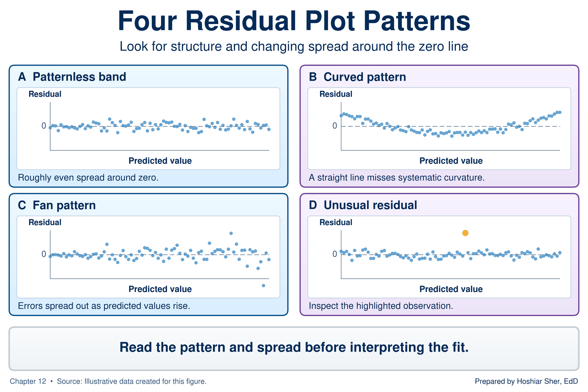
Figure 12 is the residual plot for the charges line. It is a fan. Split the 8,500 stays into roughly equal thirds by predicted charge, and the standard deviation (SD) of the residuals, a measure of how widely the residuals vary within each group (Chapter 9), grows from $9,614 in the lowest third to $11,749 in the middle third and $19,004 in the highest. The line’s predictions are therefore much less precise for long stays than for short ones. The plot also shows that the residuals are asymmetric: the largest residual is +$143,954, but no residual falls below −$38,437, because charges have a floor and a long upper tail, the right skew that Chapter 9 described for durations.
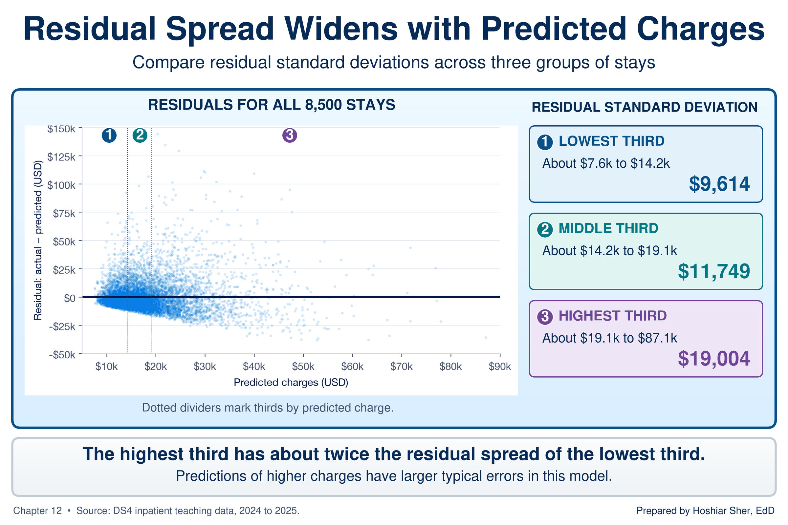
A fan does not invalidate the slope. The line still summarizes the average increase per day. It does mean that a single statement of the line’s typical error would overstate its precision for short stays and understate it for long ones. The fan matters more for statistical inference than for the slope itself: the standard errors, confidence intervals, and p-values that Chapter 13 reads from regression output assume residuals of even spread, so a fan calls for caution in reading them. The Going Deeper box describes a common remedy for a fan in skewed data.
R-squared: how much the line explains
R-squared (written R², and formally called the
coefficient of determination) is the share of the
variation in the response that the line accounts for, on a scale from 0
(none) to 1 (all). For a simple linear regression, it equals the square
of the correlation coefficient r from Chapter 10.
To see what “share of the variation” means, measure how far each stay’s charges sit from the average charge, square those distances, and add them up. That total describes how much charges vary before any line is drawn.
Now do the same with the residuals, the distances from the line. For the Riverbend stays, the residuals leave 78.2 percent of the original total, so the line accounts for the other 21.8 percent: R² = 0.218. Chapter 10 reported a correlation of 0.467 between the same two measures; 0.467 squared is 0.218, the same value. Figure 13 draws the comparison.
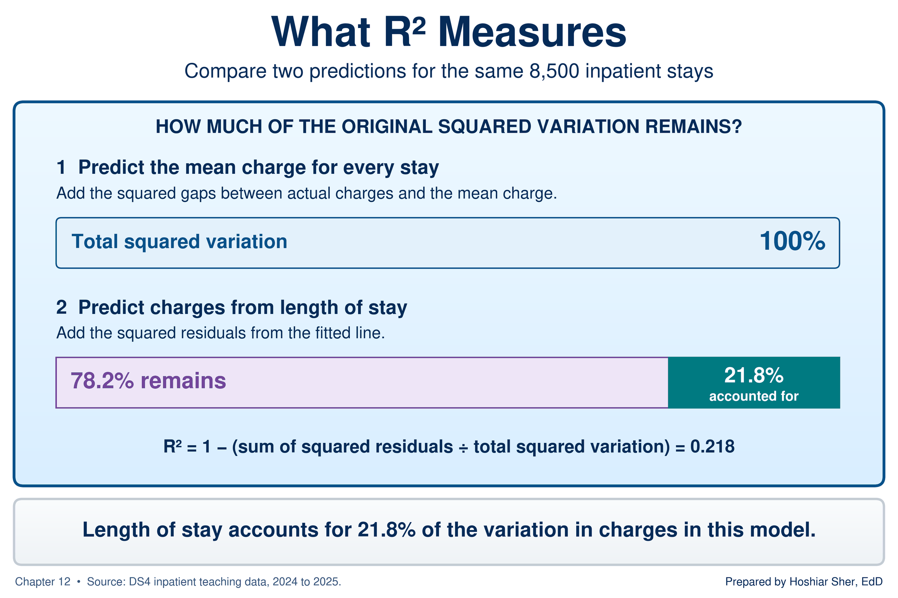
R-squared is tied to the correlation coefficient r from
Chapter 10. Two properties of r carry over directly, and
one is new. Recall that r runs from −1 to 1, with 0 meaning
no straight-line relationship; Figure 14 reviews the scale and shows
that a loose cloud and a clear U shape can both have an r
of 0.
New in this chapter, the sign of r always matches the
sign of the slope. And squaring r gives R-squared but
removes the sign: an r of −0.8 and an r of 0.8
both give an R-squared of 0.64, so read the direction from the slope,
not from R-squared.
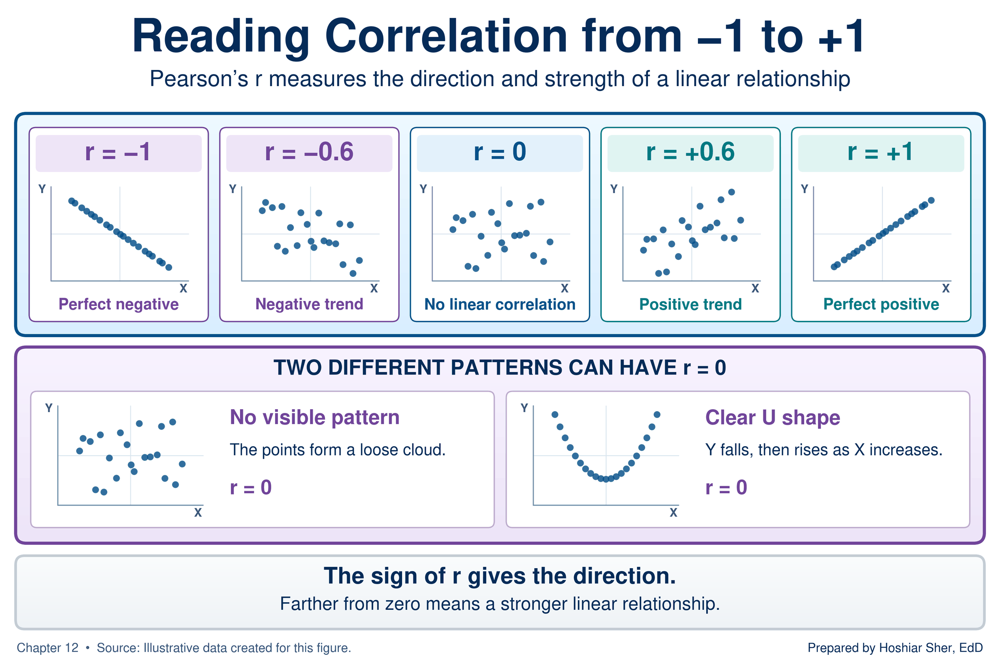
Figure 15 shows four pairs of inpatient measures, from an R-squared near 0 to the 0.22 of the charges line, so you can connect the number to the look of the cloud. Even the strongest pair is a loose cloud: in these data, no single explanatory variable accounts for as much as a quarter of the variation in the measure it is paired with.
![Figure 15: Four pairs of inpatient measures for 8,500 stays, ordered from the weakest to the strongest straight-line relationship: comorbidity count and charges (R² = 0.00), age and length of stay (R² = 0.04), comorbidity count and risk score (R² = 0.15), and length of stay and charges (R² = 0.22). Comorbidity counts are whole numbers, spread slightly sideways so the points do not overlap. Axis values are omitted because the panels use different units. Source: datasets/DS4_inpatient_clean.csv, stays admitted January 2024 to December 2025.](figures/generated/ch_12_strength.png)
R-squared is often over-interpreted. Four points guide its interpretation (NIST, 2012; Schneider et al., 2010):
- R-squared measures fit, not correctness. Anscombe’s four datasets share an R-squared of 0.67, and three of the four lines misdescribe their data.
- A low R-squared can accompany a clear slope. Practice B fits a line with an R-squared of 0.06 to 10,000 patients. With that many patients, a slope of that size is very unlikely to arise by chance alone, and Chapter 13 shows how to test it; its positive direction also agrees with national survey data.
- R-squared says nothing about cause. It measures how closely the points follow the line, not why.
- R-squared describes strength; it does not rank models. Comparing R-squared across different pairs of measures, as Figure 15 does, describes which relationships follow a straight line more closely. It does not show that one model is more useful or reliable than another: an R-squared of 0.22 for charges and 0.61 for county diabetes rates describe different problems. Comparisons of how well models predict are meaningful only when they predict the same response from comparable data.
Outliers, leverage, and influential points
Chapter 8 described outliers in a single column. In regression, a point is judged by where it sits relative to the line and to the other x values.
An outlier in regression is a point with a large residual, far above or below the line. A point has high leverage when its value of the explanatory variable is far from the others. An influential point is one whose removal noticeably changes the slope or the intercept.
Figure 16 separates the three ideas with illustrative points. An outlier at a typical x value moves the line only slightly. A point with high leverage that follows the pattern leaves the line almost unchanged. A point that has high leverage and also lies off the pattern is influential: removing it tilts the line substantially.
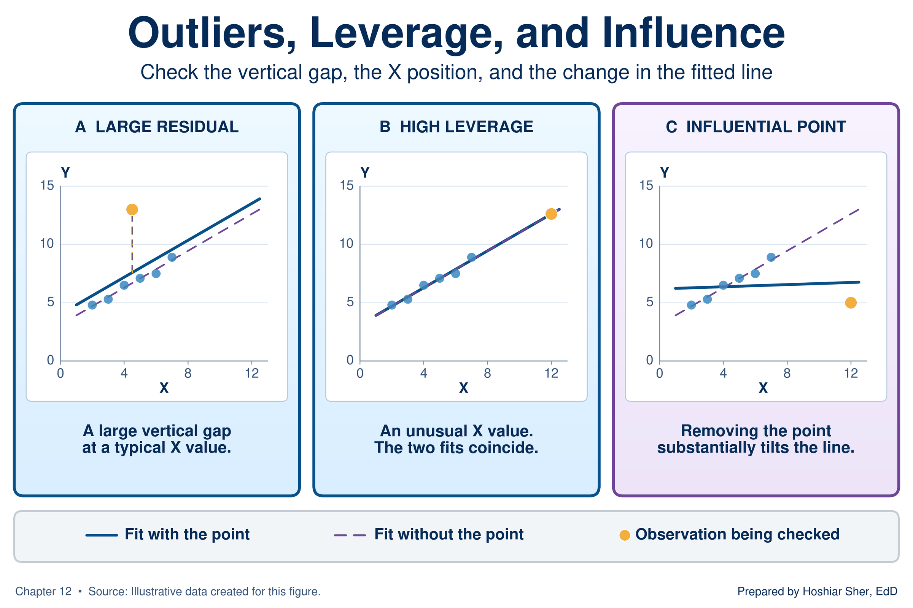
A point with high leverage has the most power to tilt the line. In Anscombe’s dataset D (Figure 2), ten points share one x value, so the eleventh point, far to the right, alone determines the slope.
The Riverbend data contain a different case: a group of outliers that is influential together. Of the 8,500 stays, 85 have charges above $80,000, and all have large positive residuals. Their lengths of stay run from 2.8 to 33.1 days; a stay inside the observed range can still have high leverage if its length is far from the average, so the longest of these stays may also carry leverage, which would need to be checked stay by stay. As a group they sit at longer stays than most, with a median of 10.6 days against 4.7 for all stays. Their share of ICU care, 31 percent, is about 2.7 times the 11 percent for all stays.
Refit the line without those 85 stays, and the slope falls from $2,131.62 to $1,810.63 per day, a drop of about 15 percent; the intercept rises to $7,398.76, and R-squared moves from 0.218 to 0.210. Figure 17 draws both lines. Because these stays were selected for their high charges, removing them is bound to lower the slope, and their longer-than-typical stays add to the effect. The refit is a sensitivity check that shows how much the group matters, not a better line.
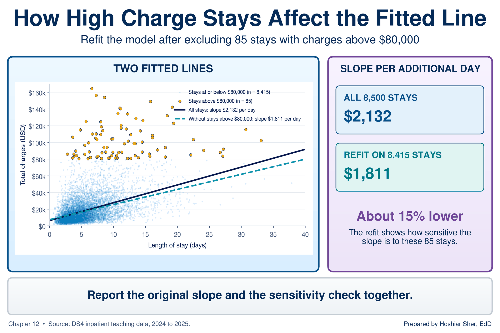
The 85 stays are not data errors. They are valid high-charge stays in the file, and deleting them to obtain a closer-fitting line would misrepresent the hospital’s charges. Apply Chapter 8’s approach to outliers: investigate the points, decide on a documented basis, and when a small group of cases moves the slope noticeably, report the line with and without them so the reader can judge.
Association, not causation
A regression slope describes how the response differs, on average, between cases with different values of the explanatory variable. It does not show that changing the explanatory variable for a case would change its response by the slope.
Chapter 4 introduced the confounder, a third factor related to both the exposure and the outcome. In regression, the same idea is called a confounding variable: a factor related to both the explanatory variable and the response that can create or distort an association between them. Severity of illness is a likely confounder here.
Sicker patients tend to stay longer, and they also tend to receive more intensive and more expensive services, such as ICU care and procedures. Part of the $2,132 per day may therefore reflect what long stays involve rather than the added days themselves. A simple regression cannot separate the two. Chapter 13 adds further explanatory variables to the line so that their associations can be read with the others held constant (Schneider et al., 2010).
Walkthrough: build an inpatient charges model
The five steps from the start of Key concepts (look, fit, read, check, and limits) are now in place. The walkthrough applies them in order to the chief financial officer’s question.
This build answers the opening scenario. You plot charges against
length of stay, fit the least-squares line twice (once with a chart
trendline and once with functions), calculate a predicted charge and a
residual for every stay, draw the residual plot, and use the line to
predict. Figure 18 shows the finished Model sheet and the
two new Table columns.
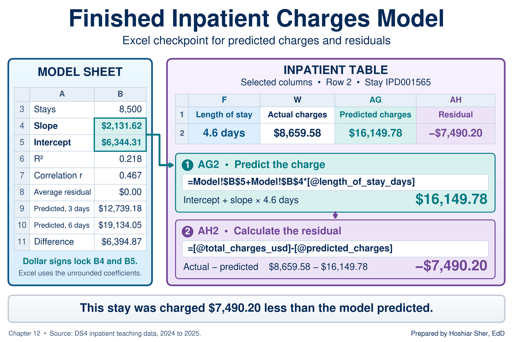
Before you start: open datasets/DS4_inpatient_clean.csv,
and immediately save a working copy as an Excel workbook so the original
stays untouched. Work only in the copy. These teaching files hold no
real patient information; real patient data must stay in approved,
secure storage, and you should make a local working copy only when you
are authorized to.
Part A. Set up the data. Convert the file into a named Table so every formula can refer to its columns by name.
- Open
datasets/DS4_inpatient_clean.csvin Excel. The file has 8,500 stays in rows 2 to 8501 and 32 columns,AtoAF. - Choose File > Save As, pick Excel
Workbook (.xlsx), and name the file
ch12_charges_model.xlsx. Work in this file from here on. - Click any cell inside the data. On the Insert tab, click Table, confirm My table has headers is checked, and click OK.
- On the Table Design tab (named
Table on macOS), set the Table Name to
Inpatient.
Part B. Draw the scatterplot. Excel places the first selected column on the horizontal axis, so select the explanatory variable first.
- Click the column letter
Fat the top of the sheet to selectlength_of_stay_days. HoldCtrl(Cmdon macOS) and click the column letterWto addtotal_charges_usd. - Choose Insert > Charts > Scatter: on the
Insert tab, click the scatter chart button (its tooltip
reads Insert Scatter (X, Y) or Bubble Chart) and pick
the first option, Scatter, which draws markers only. A
chart with 8,500 points appears.
- Confirm which column is on which axis. Right-click the chart and
choose Select Data. On Windows, select the series and
click Edit; on macOS, the fields appear in the dialog.
X values should refer to the
length_of_stay_dayscolumn ($F$2:$F$8501) and Y values tototal_charges_usd($W$2:$W$8501). If they are reversed, swap the two ranges and click OK.
- Confirm which column is on which axis. Right-click the chart and
choose Select Data. On Windows, select the series and
click Edit; on macOS, the fields appear in the dialog.
X values should refer to the
- Click the chart title and type
Inpatient charges and length of stay. - Add axis titles. On Windows, click the Chart Elements button (+) beside the chart and check Axis Titles. On macOS, choose Chart Design > Add Chart Element > Axis Titles, then Primary Horizontal, and repeat for Primary Vertical.
- Click each axis title and type
Length of stay (days)for the horizontal axis andTotal charges (USD)for the vertical axis. - Read the four features before fitting. The direction is positive, the form is roughly straight but widens to the right, the strength is moderate, and several dozen stays sit far above the rest. Your chart should resemble Figure 19.
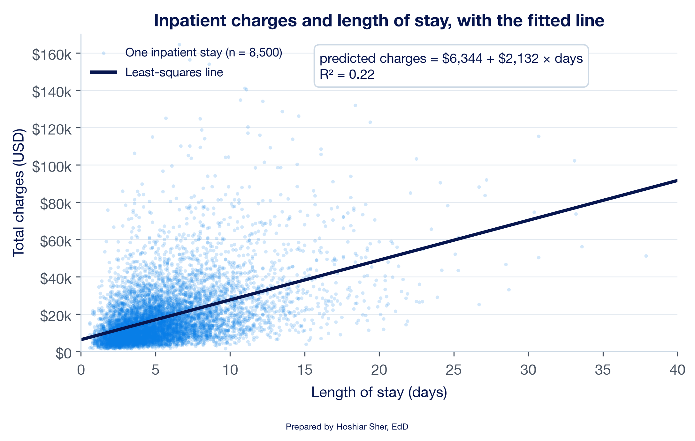
Part C. Add the trendline. A trendline fits the least-squares line without a formula (Microsoft, n.d.-a).
- Click any point in the chart so that all the points are selected.
- Open the trendline options. On Windows, click the Chart Elements button (+), point to Trendline, click its arrow, and choose More Options. On macOS, choose Chart Design > Add Chart Element > Trendline > More Trendline Options.
- In the Format Trendline pane, under Trendline Options, choose Linear.
- Near the bottom of the pane, check Display Equation on
chart and Display R-squared value on chart. A
label appears that reads about
y = 2131.6x + 6344.3andR² = 0.2182; Excel may show a different number of decimals. Drag the label to a clear area of the chart.
Part D. Calculate the line with functions. The functions return the same line as the trendline, but as cell values that other formulas can use.
- Add a worksheet with the + beside the sheet tabs,
double-click the new tab, type
Model, and press Enter. - In
A1typeInpatient Charges and Length of Stay: Simple Linear Regression, and make it Bold, size 14. - In
A3typeStays; inB3enter=COUNT(Inpatient[length_of_stay_days]). It shows8500. - In
A4typeSlope; inB4enter
=SLOPE(Inpatient[total_charges_usd], Inpatient[length_of_stay_days])
It shows about2131.62, the trendline’s2131.6. The response column comes first. - In
A5typeIntercept; inB5enter
=INTERCEPT(Inpatient[total_charges_usd], Inpatient[length_of_stay_days])
It shows about6344.31. - In
A6typeR-squared; inB6enter
=RSQ(Inpatient[total_charges_usd], Inpatient[length_of_stay_days])
It shows about0.218, the trendline’s0.2182. - In
A7typeCorrelation r; inB7enter
=CORREL(Inpatient[length_of_stay_days], Inpatient[total_charges_usd])
It shows about0.467, the value from Chapter 10. InC7enter=B7^2; it shows about0.218, the same asB6.
Part E. Calculate predicted values and residuals. Two calculated columns, as in Chapter 8, give every stay its predicted charge and its residual.
- Return to the data sheet. Click
AG1, the first empty cell to the right of the headers, typepredicted_charges, and press Enter. The Table expands to include columnAG. - In
AG2enter=Model!$B$5+Model!$B$4*[@length_of_stay_days]. Excel fills the formula down all 8,500 rows.AG2shows about16149.78, the predicted charge for the first stay, which lasted 4.6 days. The dollar signs lock the references to the slope and intercept (Chapter 6), and[@length_of_stay_days]reads the length of stay from the same row. - Click
AH1, typeresidual, and press Enter. InAH2enter=[@total_charges_usd]-[@predicted_charges].AH2shows about-7490.20: the first stay was charged $7,490 less than the line predicts. - On the
Modelsheet, inA8typeAverage residual; inB8enter=AVERAGE(Inpatient[residual]). Excel shows a tiny number in scientific notation, such as-7.658E-11, which is zero apart from rounding. - With
B8selected, choose Home > Number > Number Format > Number. It now shows0.00, the zero average that the least-squares method guarantees. (If it shows-0.00, the minus sign comes from the tiny negative value; the average is still zero.)
Part F. Draw the residual plot.
- Return to the data sheet. Click the column letter
AGand drag toAHto select both new columns. - Choose Insert > Charts > Scatter, as in step
6. Title the chart
Residuals against predicted charges, and add the axis titlesPredicted charges (USD)andResidual (USD)as in steps 8 and 9. The horizontal axis crosses at zero and serves as the reference line.- Confirm with Select Data, as in step 6, that the X
values refer to
predicted_charges(columnAG) and the Y values toresidual(columnAH). - The horizontal axis labels sit at zero, in the middle of the points. To move them to the bottom, right-click the horizontal axis, choose Format Axis, and under Labels set Label Position to Low.
- Confirm with Select Data, as in step 6, that the X
values refer to
- Read the pattern. The points form a fan that widens to the right, as in Figure 12: the prediction errors are larger for stays with high predicted charges.
Part G. Predict and summarize.
- On the
Modelsheet, inA9typePredicted, 3 days; inB9enter
=FORECAST.LINEAR(3, Inpatient[total_charges_usd], Inpatient[length_of_stay_days])
It shows about12739.18. - In
A10typePredicted, 6 days; inB10enter the same formula with6in place of3. It shows about19134.05. - In
A11typeDifference; inB11enter=B10-B9. It shows about6394.87, which is three times the slope inB4, because the two stays differ by three days. - In
A13type the summary sentence:Across 8,500 stays admitted January 2024 to December 2025, predicted charges rise by about $2,132 for each additional day of stay (R-squared 0.22), for stays of 0.6 to 37.9 days; this is an association, not the effect of shortening a stay. - Save with Ctrl+S (Cmd+S on macOS). Your
Modelsheet and the new columns should resemble Figure 18.
Return now to the chief financial officer’s question. Across these 8,500 stays, charges are about $2,132 higher, on average, for each additional day. The line accounts for 22 percent of the variation in charges; the other 78 percent is not explained by length of stay alone. The residual plot shows that the line’s dollar predictions are least precise for long, expensive stays. The ICU stay in Table 1 illustrates the point: its charges sit far above anything the line predicts for a stay of its length, a gap you calculated in the Try It box.
For a budget, the line is useful as an average across many stays, and less useful as a prediction for any single stay. The slope also describes stays as they occurred, not what would happen if stays were shortened. Both limits point to the same next step: more explanatory variables, such as ICU care and surgery, which Chapter 13 adds.
Practice on your own
These exercises reuse the walkthrough’s techniques on new questions. The first is fully guided, like the walkthrough. The second provides less guidance: it names the functions and gives values to check against, but leaves you to assemble the formulas. The third gives only the task: compare three relationships in the wellness screening file and explain each in writing.
Practice A: county diabetes and obesity
Fit a line of the diagnosed diabetes rate on the obesity rate across counties, read its slope, and check its residual plot. The file holds one row for each of 3,143 counties and county equivalents, with rates stated as percentages of adults.
County rates describe counties, not people. A slope fitted to county rates shows how diabetes rates differ between counties with different obesity rates; it does not show how one person’s diabetes risk changes with that person’s weight. Reading a group-level association as an individual one is the ecological fallacy, a term that comes from a classic study showing that correlations between group rates can differ sharply from the correlations among the individuals in those groups (Robinson, 1950).
- Open
datasets/PH1_places_county_wide.csv, then choose File > Save As and save a copy namedch12_counties.xlsx. - Click any cell inside the data, choose Insert >
Table, confirm My table has headers, and click
OK. On the Table Design tab, set the
Table Name to
Places, the name Chapter 11 used for the same file. - Click the column letter
G(obesity_pct) and drag toH(diagnosed_diabetes_pct). Choose Insert > Charts > Scatter. - Title the chart
County diagnosed diabetes and obesity, and add the axis titlesAdults with obesity (%)andAdults with diagnosed diabetes (%). - Read the four features: direction, form, strength, and unusual points.
- Add a Linear trendline with Display
Equation on chart and Display R-squared value on
chart, as in Part C. The label reads about
y = 0.4523x - 0.4058andR² = 0.6145. - Add a worksheet named
Model. InA3typeCounties; inB3enter=COUNT(Places[obesity_pct]). It shows3143. - In
A4typeSlope; inB4enter=SLOPE(Places[diagnosed_diabetes_pct], Places[obesity_pct]). It shows about0.4523. - In
A5typeIntercept; inB5enter=INTERCEPT(Places[diagnosed_diabetes_pct], Places[obesity_pct]). It shows about-0.4058. - In
A6typeR-squared; inB6enter=RSQ(Places[diagnosed_diabetes_pct], Places[obesity_pct]). It shows about0.614. - Return to the data sheet. Click
T1, typepredicted_diabetes, and press Enter. InT2enter=Model!$B$5+Model!$B$4*[@obesity_pct].T2shows about14.79, the predicted rate for Cleburne County, Alabama, whose obesity rate is 33.6 percent. - Click
U1, typeresidual, and press Enter. InU2enter=[@diagnosed_diabetes_pct]-[@predicted_diabetes].U2shows about2.41. - On the
Modelsheet, inA7typeAverage residual; inB7enter=AVERAGE(Places[residual]), and format it as Number. It shows0.00. - On the data sheet, select columns
TandU, choose Insert > Charts > Scatter, and title the chartResiduals against predicted diabetes rate. Name the pattern it shows, using the four patterns in Figure 11. - On the
Modelsheet, inA8typePredicted, 30% obesity; inB8enter=FORECAST.LINEAR(30, Places[diagnosed_diabetes_pct], Places[obesity_pct]). It shows about13.16. - In
A9typePredicted, 40% obesity; inB9enter the same formula with40in place of30. It shows about17.69. - Write two sentences: one that interprets the slope for a 10-point difference in obesity rates, and one that states what the R-squared means. Compare your chart with Figure 20 and save.
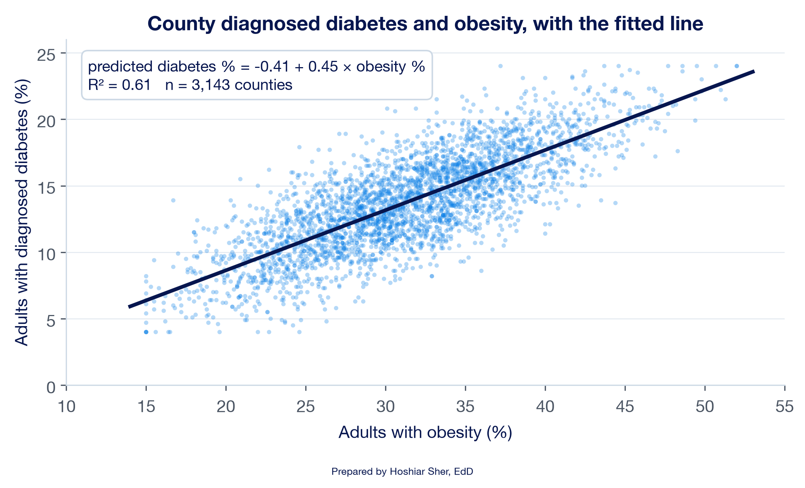
Practice B: blood pressure and age in the registry
Fit a line of systolic blood pressure on age for the patients in the registry, with less guidance. This exercise names the functions and gives you values to check against, but leaves the formulas for you to build.
Goal: a scatterplot with a fitted line, and a Model
sheet that reports the count, slope, intercept, R-squared, correlation,
and two predictions for the line of bp_systolic_last on
age. The bp_systolic_last column holds each
patient’s most recent systolic blood pressure (BP), in millimeters of
mercury (mmHg).
- Open
datasets/DS7_registry_clean.csv, save a copy namedch12_registry.xlsx, and convert the data to a Table namedRegistry. - Draw a scatterplot of systolic blood pressure against age, with a
linear trendline that displays its equation and R-squared.
- The two columns are not next to each other:
ageis columnGandbp_systolic_lastis columnV. Select them as in step 5 of the walkthrough, with age first, and confirm with Select Data that the X values refer toage, as in step 6.
- The two columns are not next to each other:
- On a
Modelsheet, calculate the count, slope, intercept, R-squared, and correlation withCOUNT,SLOPE,INTERCEPT,RSQ, andCORREL.- Remember the argument order: the response column,
Registry[bp_systolic_last], comes first.
- Remember the argument order: the response column,
- Use
FORECAST.LINEARto predict systolic blood pressure at ages 40 and 70. - Write two sentences: one that interprets the slope per decade of
age, and one that explains what the R-squared does and does not say
about age and blood pressure.
- Check your work: the count is
10,000, the slope about0.2046mmHg per year (about2.0per decade), the intercept about113.91, R-squared about0.060, and the correlation about0.245. The predictions are about122.10mmHg at age 40 and128.24at age 70. Your chart should resemble Figure 21. - The intercept is the predicted pressure at age 0, but the registry holds only adults aged 18 to 90, so it is an extrapolation and has no clinical meaning. The low R-squared means age accounts for about 6 percent of the variation in blood pressure; the remaining 94 percent is not explained by this line. The positive direction of the slope agrees with national survey data showing that high blood pressure becomes more common with age, although those data do not establish the size of the slope (Fryar et al., 2017).
- Check your work: the count is
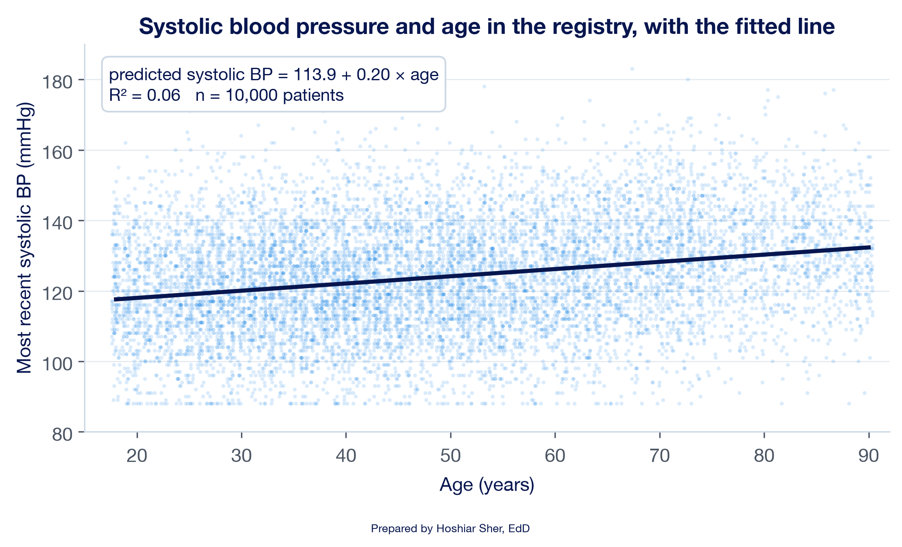
Practice C: compare three relationships in the wellness screening file
Open datasets/DS9_wellness_screening.csv, the file of
100 adults introduced with Figure 4, and compare the following three
pairs of columns. None of these pairs appears in that figure, so you
discover each relationship yourself. In each pair, the first column is
the response variable and the second is the explanatory variable.
- Pair 1: body weight in kilograms
(
weight_kg, columnP) and waist circumference in centimeters (waist_cm, columnE). - Pair 2: high-density lipoprotein (HDL) cholesterol
in milligrams per deciliter, mg/dL (
hdl_cholesterol, columnR), and waist circumference in centimeters (waist_cm, columnE). - Pair 3: vitamin D level in nanograms per
milliliter, ng/mL (
vitamin_d, columnT), and height in centimeters (height_cm, columnO).
For each pair:
- Create a scatterplot with the explanatory variable on the horizontal axis.
- Add a linear trendline that displays its equation and R-squared.
- Calculate
rwithCORREL. - Write one or two sentences that explain the relationship:
- its direction (positive, negative, or no meaningful straight-line relationship),
- its strength, using
r, - what the slope means in the units of the data,
- how much of the variation the line accounts for, using R-squared.
Then, for all three pairs together:
- Write two sentences that compare the pairs: which relationship is strongest, which is negative, and which shows no meaningful straight-line relationship.
The following model is illustrative, not drawn from the book’s datasets. An analyst fits a simple linear regression across 40 outpatient clinics, with each clinic’s average patient-experience score (0 to 100) as the response and its average wait time in minutes as the explanatory variable. The clinics’ average waits range from 10 to 55 minutes. The line is predicted score = 92.0 − 0.45 × wait minutes, with an R-squared of 0.38.
- Interpret the slope in one sentence, with units.
- Calculate the predicted score for a clinic with a 20-minute wait and for one with a 40-minute wait, and state the difference.
- Say whether the intercept, 92.0, describes any of the 40 clinics, and why.
- A manager asks for the predicted score of a clinic with a 90-minute wait. State what you would tell the manager.
- Explain what an R-squared of 0.38 indicates, and identify one limitation of its interpretation.
The answer key is at the end of the chapter.
Modeling the logarithm of a skewed response. When a
response is right-skewed, as inpatient charges are, analysts often fit
the line to the natural logarithm of the response instead of the
response itself (Gelman et al., 2020). The natural logarithm is a scale
on which equal steps represent equal percentage changes rather than
equal dollar amounts, so a stay charged $20,000 and one charged $40,000
sit the same distance apart as stays charged $40,000 and $80,000. In
Excel, a calculated column with =LN([@total_charges_usd])
holds the logarithm, and SLOPE and INTERCEPT
fit the line as before. For the Riverbend stays, the slope on the log
scale is 0.1015. Converted with
=EXP(0.1015)-1, it says that each additional day is
associated with charges about 10.7 percent higher, a percentage change
rather than a fixed dollar amount. The R-squared on the log scale,
0.217, measures fit to the logarithm of charges, a different response,
so it cannot be compared with the 0.218 for dollars. The residual plot
is the better guide: the SD of the residuals is nearly the same in each
third of the predicted values, so the fan in Figure 12 largely
disappears. The trade-off is interpretation: results on the logarithmic
scale must be converted back to dollars before they are reported.
The Analysis ToolPak’s Regression tool. The
Data > Data Analysis > Regression command, from
the add-in introduced in Chapter 3, fits the same line and writes a full
output table (Microsoft, n.d.-f). Its Coefficients
column repeats the intercept and slope from Part D, R
Square repeats B6, and the
Residuals option writes the residual column from Part
E. The table also reports a standard error, a p-value, and a 95 percent
confidence interval for each coefficient, which apply Chapter 10’s ideas
to the slope. Those columns assume residuals of even spread, so with a
fan like Figure 12, read them with caution. Chapter 13 reads them when
it adds more explanatory variables.
The following is an illustrative scenario, not a specific organization. A hospital’s finance committee reviews the charges line and a manager proposes a target: discharge every patient one day earlier and save about $2,132 per stay. The proposal treats the slope as the effect of an intervention. The slope compares stays of different lengths across many patients; it does not measure what one patient’s charges would be if that patient left a day sooner. Long stays tend to belong to sicker patients who also receive more intensive services, so part of the $2,132 may reflect severity rather than the added days. Charges are also not costs, so even an accurate reduction in charges would not translate dollar for dollar into savings. Discharging a patient before the patient is clinically ready could also carry its own risks, including a return to the hospital. The analyst reframes the result for the committee: “Across our stays, each additional day is associated with about $2,132 more in charges. That figure does not show what shortening a stay would save. Chapter 13’s methods, which hold severity and ICU care constant, are the next step toward that question.”
- A scatterplot comes first: read its direction, form, strength, and unusual points, because a line and its summary numbers describe only the straight-line part of a relationship.
- Simple linear regression fits predicted response = intercept + slope
× explanatory variable by least squares, the line that makes the sum of
the squared residuals as small as possible;
SLOPE,INTERCEPT,RSQ, and the chart trendline all return it. - The slope is the change in the predicted response for each one-unit increase in the explanatory variable, read in the data’s units; the intercept is meaningful only when zero lies within the data.
- A residual is actual minus predicted; a residual plot should show a patternless band, and a curve, a fan, or a distant point signals that a straight line does not adequately represent the pattern.
- R-squared is the share of variation the line accounts for and equals
rsquared; it measures fit, not correctness or cause. Predictions beyond the data’s range are extrapolations, a few influential points can move the slope, and a slope describes an association, not the effect of changing the explanatory variable.
- For each of the six scatterplots in Figure 22, state the direction, form, and strength, and say whether a straight line would describe the points adequately. Name the plot with a point that would change the slope most if it were removed, and the plot whose residual plot would show a fan.
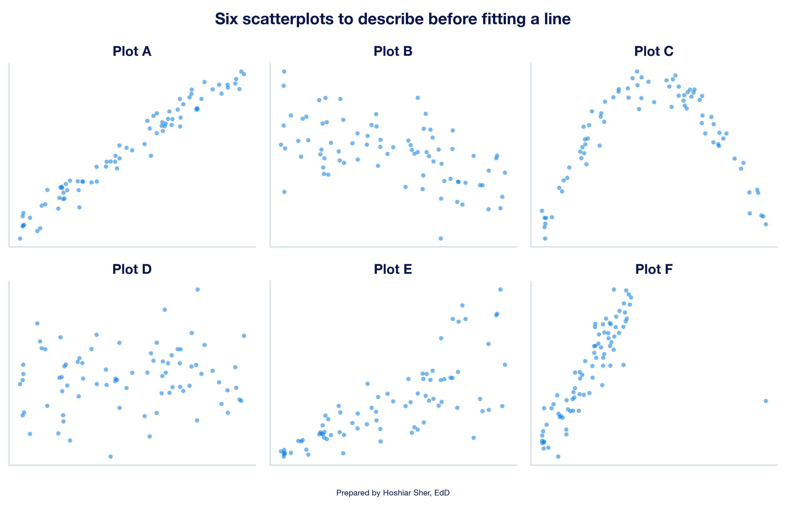
- Open
datasets/DS9_wellness_screening.csvand draw four scatterplots: grip strength (grip_strength_kg, columnQ) against age (age, columnB); HDL cholesterol (hdl_cholesterol, columnR) against weekly exercise (exercise_hours_week, columnH); screen time (screen_time_hours, columnS) against sleep (sleep_hours, columnM); and weight (weight_kg, columnP) against height (height_cm, columnO). Add a linear trendline to each that displays its equation and R-squared, calculaterfor each pair withCORREL, and describe each relationship by its direction, form, and strength. For which pair does a straight line misdescribe the points, and how can you tell from the scatterplot? - Using the line for HDL cholesterol on waist circumference from Practice C, predicted HDL = 113.61 − 0.594 × waist in centimeters, state the change in predicted HDL cholesterol for a waist 10 centimeters larger, and explain why the intercept should not be read as the HDL cholesterol of a person with a waist of 0 centimeters. If waist were recorded in inches (1 inch = 2.54 centimeters), what would the slope be, and would R-squared change?
- An 8-day stay was charged $30,000. Using the walkthrough’s line, calculate the predicted charge and the residual, and state whether the line over-predicted or under-predicted this stay.
- Draw the residual plot for the county line in Practice A, and
compare it with the residual plot for the charges line in Figure 12. For
which of the two lines could you report a single typical prediction
error, such as
=STDEV.Sof the residuals, without qualification? Explain why, using the pattern each residual plot shows. - A report on clinic data gives a fitted line with a negative slope
and an R-squared of 0.09, and a colleague concludes that the two
measures are unrelated. Calculate
r, including its sign, and write a two-sentence reply. - A county health official reads the Practice A line and writes: “If our county lowers its obesity rate by 10 percentage points, its diabetes rate will fall by 4.5 points, and a county with 60 percent obesity should expect a diabetes rate of about 27 percent.” Identify three problems with this statement, drawing on extrapolation, association versus cause, and the ecological fallacy, and rewrite it as an accurate statement.
Try It (residuals by hand). For IPD007584, the predicted charge is $6,344.31 + $2,131.62 × 12 = $31,923.75, and the residual is $30,974.13 − $31,923.75 = −$949.62; the stay was charged about $950 less than predicted. For IPD005645, the predicted charge is $6,344.31 + $2,131.62 × 5.7 = $18,494.54, and the residual is $124,953.57 − $18,494.54 = +$106,459.03. The line describes the 12-day stay well, missing it by about 3 percent of its charges, and misses the cardiology stay by more than $106,000. The table shows one feature the line does not take into account: the stay included ICU care. (With unrounded coefficients, Excel gives residuals of −$949.66 and +$106,459.01.)
Try It (wait-time model). (1) For each additional minute of average wait, a clinic’s predicted patient-experience score is 0.45 points lower. (2) At 20 minutes the prediction is 92.0 − 0.45 × 20 = 83.0; at 40 minutes it is 92.0 − 0.45 × 40 = 74.0; the difference, −9.0 points, equals 20 minutes times the slope. (3) No: no clinic has a zero-minute wait, and the observed waits start at 10 minutes, so the intercept only anchors the line. (4) The line’s prediction, 92.0 − 0.45 × 90 = 51.5, is an extrapolation far beyond the longest observed wait of 55 minutes, and the data cannot show whether the straight line holds there; the analyst should decline to report it as a prediction. (5) Average wait accounts for 38 percent of the variation in clinic scores, and the other 62 percent is not explained by this line; the R-squared does not show that shorter waits would raise scores, and because the data describe clinics, it says nothing directly about individual patients.
Practice A interpretation. The scatterplot shows a
positive direction, a straight form, and moderately strong clustering,
with short horizontal rows of points at the 4 and 24 percent limits on
the diabetes rate. The slope, about 0.45, means that a
county with an obesity rate 10 percentage points higher has a predicted
diagnosed diabetes rate about 4.5 points higher. The R-squared of
0.61 means obesity rates account for about 61 percent of
the variation in diabetes rates across these counties.
The residual plot shows a band of roughly even width with no curve or
fan; the SD of the residuals is about 2.2 to 2.3 points in each third of
the predicted values. The intercept, -0.41, would be a
negative diabetes rate at zero obesity, which is impossible and also
outside the observed obesity rates of 15 to 52 percent: an
extrapolation. These are synthetic county rates, and the association
describes counties, not individuals.
Practice B interpretation. Each additional year of age is associated with a predicted systolic pressure about 0.20 mmHg higher, or about 2 mmHg per decade. Age accounts for about 6 percent of the variation in blood pressure. The remaining 94 percent is not explained by this line; it may reflect other patient characteristics, measurement variation, or chance. A low R-squared does not mean the slope is absent or unimportant.
Practice C interpretation. Check values: weight on
waist, slope 1.649, intercept -76.00,
R-squared 0.706, r 0.840; HDL
cholesterol on waist, slope -0.594, intercept
113.61, R-squared 0.262, r
-0.512; vitamin D on height, slope -0.032,
intercept 36.22, R-squared 0.001,
r -0.024. Example sentences, which yours need
not match word for word:
- Weight and waist: “Across 100 adults, body weight
is higher by about 1.65 kilograms for each additional centimeter of
waist circumference;
ris 0.84, a strong positive relationship, and the line accounts for about 71 percent of the variation in weight.” - HDL cholesterol and waist: “Across 100 adults, HDL
cholesterol is lower by about 0.59 mg/dL for each additional centimeter
of waist circumference;
ris −0.51, a moderate negative relationship, and the line accounts for about 26 percent of the variation in HDL cholesterol.” - Vitamin D and height: “Across 100 adults, vitamin D
level shows no meaningful straight-line relationship with height;
ris −0.02, and the line accounts for less than 1 percent of the variation.”
Comparison: weight and waist is the strongest relationship; HDL cholesterol and waist is the negative one, of moderate strength; and height has no meaningful straight-line relationship with vitamin D, so its slope of −0.03 ng/mL per centimeter should not be interpreted. In the first two scatterplots, one participant (WS035) sits far to the right of the others, a high-leverage point worth noting. All three are associations in synthetic data, not causes.
Exercises.
- A: positive, straight, strong; a line is adequate. B: negative, roughly straight, weak; a line is adequate but explains little. C: a curve that rises and then falls, so a straight line misdescribes it even though the points follow a clear pattern. D: no direction and no pattern; a line would show a slope near zero. E: positive and roughly straight, but the spread widens to the right, so its residual plot would show a fan. F: positive, straight, and strong, except for one point far to the right and below the pattern; that high-leverage point would change the slope most if removed, as in Anscombe’s dataset D.
- Grip strength and age: predicted grip = 45.10 −
0.111 × age, R² = 0.142,
r= −0.377. Thersuggests a moderate negative relationship, but the scatterplot shows a curve: grip strength rises from the twenties to a peak around age 45 and then falls, so the straight line misdescribes the points at both ends. HDL cholesterol and exercise: predicted HDL = 51.88 + 1.981 × exercise hours, R² = 0.164,r= 0.405: moderate and positive. Screen time and sleep: predicted screen time = 8.34 − 0.364 × sleep hours, R² = 0.063,r= −0.252: weak and negative. Weight and height: predicted weight = −84.57 + 0.968 × height, R² = 0.174,r= 0.417: moderate and positive; the negative intercept is an extrapolation to a height of 0 centimeters and has no meaning. Excel may display the trendline coefficients with different rounding. - A waist 10 centimeters larger is associated with predicted HDL cholesterol about 5.9 mg/dL lower (10 × −0.594). The intercept, 113.6 mg/dL, is the prediction for a waist of 0 centimeters, far outside the observed waists of 79 to 133 centimeters, so it is an extrapolation with no meaning. In inches, the slope would be −0.594 × 2.54, about −1.51 mg/dL per inch; R-squared would stay at 0.262, because it does not depend on the units.
- The predicted charge is $6,344.31 + $2,131.62 × 8 = $23,397.27 (Excel: $23,397.30). The residual is $30,000 − $23,397.27 = +$6,602.73. The residual is positive, so the line under-predicted this stay.
- The county residual plot shows a band of roughly even width, with residual SDs of about 2.3, 2.2, and 2.3 points in the three thirds of predicted values, so one overall figure, about 2.25 points, describes its typical error fairly at every level. The charges residual plot is a fan, with residual SDs rising from about $9,614 to $19,004, so a single overall figure would overstate the line’s precision for long stays and understate it for short ones; it needs to be stated by range.
ris the square root of 0.09, which is 0.30, and it takes the sign of the slope, sor= −0.30. Reply: “An R-squared of 0.09 means the line accounts for about 9 percent of the variation, so 91 percent is not explained by this line. Anrof −0.30 is still a weak negative relationship, so the measures are associated, though not strongly.”- Three problems: (1) a 60 percent obesity rate lies outside the observed range of 15 to 52 percent, so the 27 percent prediction is an extrapolation; (2) the slope compares counties with different obesity rates and does not show what would happen if one county’s rate changed, which is a causal claim; and (3) because these are county rates, the line says nothing about individual people, the ecological fallacy. An accurate statement: “Across these counties, those with obesity rates 10 percentage points higher have diagnosed diabetes rates about 4.5 points higher, on average, within the observed range of 15 to 52 percent. This association does not show how a change in one county’s obesity rate would change its diabetes rate.”
- Agency for Healthcare Research and Quality. (2026). Cost-to-charge ratio files. Healthcare Cost and Utilization Project. https://hcup-us.ahrq.gov/db/ccr/costtocharge.jsp
- Anscombe, F. J. (1973). Graphs in statistical analysis. The American Statistician, 27(1), 17–21. https://doi.org/10.1080/00031305.1973.10478966
- Bewick, V., Cheek, L., & Ball, J. (2003). Statistics review 7: Correlation and regression. Critical Care, 7(6), 451–459. https://doi.org/10.1186/cc2401
- Centers for Disease Control and Prevention. (2025). PLACES: Methodology. https://www.cdc.gov/places/methodology/index.html
- Diez, D. M., Çetinkaya-Rundel, M., & Barr, C. D. (2019). OpenIntro statistics (4th ed.). OpenIntro. https://www.openintro.org/book/os/
- Fryar, C. D., Ostchega, Y., Hales, C. M., Zhang, G., & Kruszon-Moran, D. (2017). Hypertension prevalence and control among adults: United States, 2015–2016 (NCHS Data Brief No. 289). National Center for Health Statistics. https://www.cdc.gov/nchs/products/databriefs/db289.htm
- Gelman, A., Hill, J., & Vehtari, A. (2020). Regression and other stories. Cambridge University Press. https://doi.org/10.1017/9781139161879
- Microsoft. (n.d.-a). Add a trend or moving average line to a chart. Microsoft Support. https://support.microsoft.com/en-us/office/excelexp/add-a-trend-or-moving-average-line-to-a-chart
- Microsoft. (n.d.-b). FORECAST and FORECAST.LINEAR functions. Microsoft Support. https://support.microsoft.com/en-us/office/forecast-and-forecast-linear-functions-50ca49c9-7b40-4892-94e4-7ad38bbeda99
- Microsoft. (n.d.-c). INTERCEPT function. Microsoft Support. https://support.microsoft.com/en-us/office/intercept-function-2a9b74e2-9d47-4772-b663-3bca70bf63ef
- Microsoft. (n.d.-d). RSQ function. Microsoft Support. https://support.microsoft.com/en-us/office/rsq-function-d7161715-250d-4a01-b80d-a8364f2be08f
- Microsoft. (n.d.-e). SLOPE function. Microsoft Support. https://support.microsoft.com/en-us/office/slope-function-11fb8f97-3117-4813-98aa-61d7e01276b9
- Microsoft. (n.d.-f). Use the Analysis ToolPak to perform complex data analysis. Microsoft Support. https://support.microsoft.com/en-us/office/use-the-analysis-toolpak-to-perform-complex-data-analysis-6c67ccf0-f4a9-487c-8dec-bdb5a2cefab6
- National Institute of Standards and Technology. (2012). NIST/SEMATECH e-handbook of statistical methods. https://doi.org/10.18434/M32189
- Robinson, W. S. (1950). Ecological correlations and the behavior of individuals. American Sociological Review, 15(3), 351–357. https://doi.org/10.2307/2087176
- Schneider, A., Hommel, G., & Blettner, M. (2010). Linear regression analysis: Part 14 of a series on evaluation of scientific publications. Deutsches Ärzteblatt International, 107(44), 776–782. https://doi.org/10.3238/arztebl.2010.0776
- Vu, J., & Harrington, D. (2020). Introductory statistics for the life and biomedical sciences. OpenIntro. https://www.openintro.org/book/biostat/
- Coefficient of determination
- The formal name for R-squared, the share of the variation in the response that a fitted line accounts for.
- Confounding variable
- A third factor, related to both the explanatory variable and the response, that can create or distort an association between them.
- Correlation coefficient (r)
- A measure of the strength and direction of the straight-line relationship between two numerical variables, also called Pearson’s r, on a scale from −1 to 1, where 0 means no straight-line relationship.
- Dependent variable
- Another name for the response variable: the measure a regression line describes or predicts, plotted on the vertical axis.
- Ecological fallacy
- The error of reading an association observed between groups, such as counties, as if it held for the individuals within them.
- Explanatory variable
- The measure used to describe or predict the response in a regression, plotted on the horizontal axis; also called the independent variable or predictor.
- Extrapolation
- The use of a fitted line to predict for values of the explanatory variable outside the range of the data used to fit it.
- Independent variable
- Another name for the explanatory variable: the measure used to describe or predict the response, plotted on the horizontal axis.
- Influential point
- A point whose removal noticeably changes the slope or the intercept of a fitted line.
- Intercept
- The predicted value of the response when the explanatory variable equals zero.
- Least-squares line
- The line that makes the sum of the squared residuals as small as possible.
- Leverage
- The potential of a point to tilt a fitted line, high when its value of the explanatory variable is far from the others.
- Non-constant spread
- A residual pattern in which the residuals scatter farther from zero in one part of the plot than in another.
- Outlier (in regression)
- A point with a large residual, far above or below the fitted line.
- Predicted value
- The value of the response that a fitted line gives for a chosen value of the explanatory variable.
- R-squared
- The share of the variation in the response that a fitted line accounts for, from 0 to 1; in simple linear regression, the square of the correlation coefficient.
- Residual
- The difference between an observed value of the response and the value the line predicts for it.
- Residual plot
- A scatterplot of residuals against predicted values, with a reference line at zero, used to judge whether a line describes the data adequately.
- Response variable
- The measure a regression line describes or predicts, plotted on the vertical axis; also called the dependent variable or outcome.
- Simple linear regression
- A model that describes a numerical response variable with a straight line in one explanatory variable.
- Slope
- The change in the predicted response for each one-unit increase in the explanatory variable.
Cite this chapter
@incollection{sher2026ch12,
author = {Sher, Hoshiar J.},
title = {Simple Linear Regression for Numerical Outcomes},
booktitle = {Introduction to Healthcare Data Analytics Using Excel},
year = {2026},
doi = {10.5281/zenodo.23327956},
url = {https://yar177.github.io/intro-to-HDA-site/ch12.html}
}